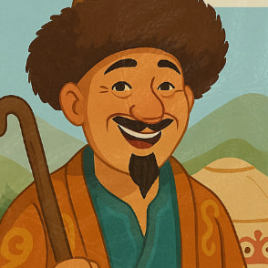
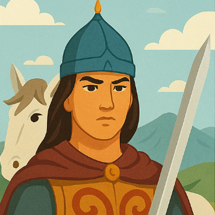

Жил в одном ауле безбородый хитрец Алдар-Косе. Глаза у него были острые, ноги быстрые, руки
проворные, а ум ещё проворнее. Любил Алдар-Косе пошутить и посмеяться, особенно над глупцами и
скрягами. Богатства у него не было, но хитростью он не раз добывал себе на обед жирного барана.
Жатыр-бай был человеком жадным и глупым. Стада у него были большие: начнёт считать на рассвете,
а закончит на закате. Пришёл к нему как-то Алдар-Косе и говорит:
— Почтенный бай, есть у меня два рубля, а кошелька нет. Хожу, держу деньги в руке — рука устала.
Хочу я от этих денег избавиться. Не поможешь ли ты мне?
— Давай, давай, помогу! — обрадовался бай. — Скажи только, как?
— Продай мне за два рубля какого-нибудь плохонького козлёнка, — говорит Алдар-Косе.
Подумал, подумал бай: «Ну что ж, можно продать». Поймал в стаде хроменького козлёнка, тощего,
чуть живого, которому всего-то два дня до смерти осталось, и подаёт Алдару Косе:
— Вот бери, хоть и жалко дёшево отдавать. Хороший козлёнок. Давай два рубля!
Алдар-Косе взял козлёнка, а деньги в кулаке держит:
— Знаешь что, почтенный бай. Я передумал. Бери два рубля и козлёнка в придачу, а мне дай
ягнёнка.
«Что ж, не плохая мена, — подумал бай: — два рубля да ещё козлёнок в придачу!» — и пошёл ловить
ягнёнка. Поймал самого маленького и подаёт Алдару-Косе:
— Вот, бери. Хороший ягнёнок. Давай два рубля и козлёнка.
Алдар-Косе взял ягнёнка, а деньги в кулаке держит и козлёнка из рук не выпускает:
— Знаешь что, почтенный бай. Я передумал. Бери два рубля, козлёнка и ягнёнка в придачу, а мне
дай козу.
«Неплохая мена, — подумал бай: — два рубля да козлёнок, да ещё ягнёнок в придачу». И пошёл
ловить козу. Поймал самую тощую и подаёт Алдару-Косе:
— Вот, бери, хорошая коза. Давай два рубля, козлёнка и ягнёнка.
— Постой, постой, почтенный бай! — говорит Алдар-Косе: — Я передумал. Бери два рубля, козлёнка,
ягнёнка и козу в придачу, а мне дай только одного барана, но позволь мне самому его выбрать.
«Вот эта мена выгодней всех других! — подумал обрадованный бай: — Два рубля, козлёнок, ягнёнок
да ещё коза в придачу — и всё это за одного барана!» И говорит Алдару-Косе:
— Что ж, выбирай!
Выбрал Алдар-Косе себе самого большого, жирного барана, отдал баю два рубля, козлёнка, ягнёнка и
козу в придачу, взвалил барана на плечи и пошёл, а бай Жатыр-бай посмеивался, потирая руки:
— Ну и глупец же Алдар-Косе! Столько добра отдал за одного только барана!
Так и не понял бай, кто из них в дураках остался.
Ертөстік
Ер-Тостик, необычайно быстро росший мальчик, жил с родителями, Булатбаем и его женой, которые
из-за нашествия девяти тысяч человекопоедающих лошадей и исчезновения девяти сыновей вели
уединенный образ жизни, промышляя охотой. Однажды Ер-Тостик ослушался запрета родителей и
отправился на той, где случайно услышал намек на своих братьев и табун.
Вернувшись, он настоял на правде, и родители рассказали о прошлом: девяти сыновьях и ужасном
табуне, из-за которого они бежали. Братья остались, и их судьба была неизвестна. Несмотря на
запрет отца, Ер-Тостик собрал припасы и отправился на поиски.
Встретив пастухов, он узнал о пире, где ожидали его братьев. Прибыв туда, Ер-Тостик увидел
девять связанных лошадей и девять шуб. В юрте он нашел своих братьев, которые сначала отнеслись
к нему с недоверием, кроме младшего. Чтобы испытать его, братья велели поймать строптивую
кобылу. Ер-Тостик проявил мастерство, случайно обезглавив животное.
За ужином он рассказал свою историю, назвавшись сыном Булатбая, некогда владевшего девятью
тысячами лошадей и девятью сыновьями, но разорившегося и потерявшего связь с оставшимися детьми.
Братья признали его, и Ер-Тостик предложил отправиться к родителям.
Он поехал вперед на восьминогом рыжем жеребце, играя на сыбызгы, а братья погнали скот. Прибыв
на неделю раньше, Ер-Тостик помог родителям восстановить хозяйство. Вскоре у Булатбая родилась
еще одна дочь, и десять сыновей захотели жениться.
Отправившись на поиски десяти сестер-невест, Булатбай потерпел неудачу. Во второй поездке он
встретил старуху, которая, напоив его, временно умертвила, а затем оживила и рассказала о хане с
десятью дочерьми. Булатбай посватался, взяв с собой девять сыновей, оставив Ер-Тостика дома.
Невесты взяли с собой ценные дары. По пути старуха предостерегла младшую невесту, Кенжекей, от
остановки у дерева Байтерек. Булатбай ослушался, и из увиденного им легкого появилась
старуха-ведьма, схватившая его. В обмен на жизнь она потребовала Ер-Тостика и забрала его
кольцо-амулет.
Кенжекей, заметив отсутствие амулета, догадалась об обмане и отправила Ер-Тостика на Шал-гуйруке
в белой кольчуге, предупредив о дереве и старухе. В пути конь рассказал о ведьме и амулете.
Ер-Тостик хитростью забрал амулет, но старуха ранила коня.
Шал-гуйрук упал под землю, где Ер-Тостика встретили восемьдесят старух. Он не испугался их змей,
поразив старух смелостью. Они рассказали о хане с золотой косой, которую нужно было добыть для
возвращения на землю.
В пути Ер-Тостик встретил трех богатырей: поднимавшего горы, выпивавшего озеро и
предсказывавшего судьбу. Вместе они прибыли к хану и потребовали его дочь. Хан заточил их в
железный дом и поджег, но богатырь с водой потушил огонь. В другом испытании силач удержал
обрушившуюся гору. Затем они достали со дна колодца котел.
В конце концов, хан согласился отдать дочь и проводил их. На прощание Ер-Тостик обезглавил хана,
отдал его дочь товарищам, а голову повез старухам, которые направили его к Каабе.
Кыз Жибек
У богатого бая Базарбая умерли девять сыновей от холеры. В старости младшая жена родила ему
Тулегена, а спустя девять лет – Сансызбая. Базарбай не спешил женить сыновей, считая, что они
сами найдут себе невест.
В шестнадцать лет Тулеген услышал от купца о шести родах шекты у реки Ак-Жайык, где можно найти
прекрасную невесту. Долгая дорога в сто дней с сорокадневной безводной пустыней запала ему в
душу. Четыре года спустя Тулеген собрался в путь. Он выбрал серого иноходца, заказал роскошное
седло и сбрую, собрал дружину из восьмидесяти человек, пятнадцать проводников и навьючил сорок
верблюдов припасами и золотом.
Мать умоляла его вернуться, опасаясь за старика-отца и младшего брата, но Тулеген был
непреклонен, ссылаясь на то, что родители не искали ему невесту. Мать благословила его в дорогу,
поручив богам и мифическим покровителям. Тулеген, несмотря на разрешение взять сорок коней,
выбрал двести пятьдесят иноходцев, желая показать свое богатство.
Он отправил гонцов к шектинцам с предложением дарить коня за каждую показанную красивую девушку.
Увидев двести десять девушек и раздав коней, его дружинники забеспокоились и решили сами найти
ему достойную невесту.
Шектами правил хан Сарлыбай, у которого было шесть сыновей и младшая дочь, красавица Жибек.
Визирь хана, мудрый акын Каршыга, прослышав о Тулегене, поехал встретиться с ним, надеясь, что
тот понравится Жибек. Каршыга представился и предложил Тулегену поехать с ним, обещая найти ему
прекрасную невесту – дочь хана Жибек.
Соблазненный предложением, Тулеген оставил большую часть своей дружины и с пятью спутниками
отправился с Каршыгой на Ак-Жайык. После восьми дней пути они достигли реки. Каршыга сказал, что
шектинцы кочуют на летовки и он покажет Жибек в пути. Оставив спутников, они поехали вперед и
встретили кочевье, во главе которого ехала девушка необычайной красоты в золотом платье. Тулеген
подумал, что это Жибек, но Каршыга его поправил. Встретив еще одно кочевье, Тулеген увидел
девушку, сияющую как звезда.
Герои

Алдар-Косе
Алдар-Косе
Алдар-Косе — хитрый и находчивый герой, который всегда побеждает несправедливость и жадность.

Ертөстік
Ертөстік
Ертөстік — юный воин, отправившийся в опасное путешествие, чтобы найти своих братьев и победить зло.
Кыз Жибек
Кыз Жибек
Кыз Жибек — символ красоты и чести, героиня романтической истории о любви и преданности.
Игры
Помоги Ертостыку добраться до цели
Угадай героя
Квест с Алдар-Косе
История и культура
Казахские народные сказки — это богатое наследие, передаваемое из
поколения в поколение. Узнайте больше о традициях, героях и мудрости
предков.